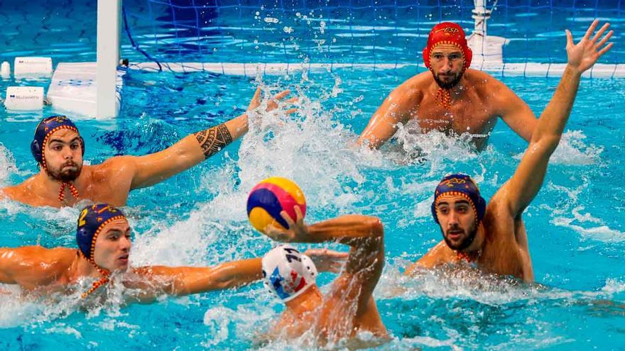

El waterpolo es un deporte que se practica en una piscina, en el cual se enfrentan dos equipos. El objetivo del juego es el de marcar el mayor número de goles en la portería del equipo contrario durante el tiempo que dura el partido.
El documento lo vamos a dividir en las siguientes categorias:
Hay 6 jugadores de campo y un portero en cada equipo.Salvo el portero, las posiciones de los demás jugadores pueden variar a lo largo del partido según la situación lo demande. Los jugadores, por tanto, deben saber desenvolverse en cualquier posición a pesar de tener una donde son especialistas.
Tradicionalmente los jugadores se sitúan en arco alrededor de la portería contraria a una distancia aproximada de siete metros. El boya (también llamado pivote o avant-piquet) se sitúa en el centro del ataque y a una distancia de unos dos o tres metros de la portería contraria. Esta configuración puede variar en función de las necesidades tácticas, así como puede haber un intercambio de posiciones entre los jugadores durante el ataque. Cuando un defensor es expulsado y el equipo atacante dispone de un jugador más, la disposición cambia. Existen varias jugadas para aprovechar esta superioridad, siendo las más extendidas el "4-2" y el "3-3", donde el primer dígito indica el número de jugadores que se sitúan en la línea de dos metros, y el segundo, el número de jugadores que se sitúan en una línea algo más lejana, a unos cinco o seis metros.
Las posiciones de defensa son las mismas que las de los atacantes, existiendo multitud de posibilidades tácticas, como defensa individual, zona presionante, zonas por alguna posición donde el rival sea más débil, defensa doble del boya o zona "m". La defensa en inferioridad numérica suele adaptarse al ataque que decida el equipo contrario, siendo lo habitual o bien defensas basadas en el bloqueo de brazos, donde la idea es impedir que el atacante vea con claridad la portería, o bien defensas rápidas tratando de dificultar la circulación del balón.
El portero, cuyas funciones son evitar goles, bloquear el balón y rechazarlo para impedir que entre en su portería, tiene ciertos privilegios respecto al resto de jugadores, siempre y cuando se encuentre dentro de la zona de cinco metros delante de su portería:
Además, el reglamento le impide pasar del medio campo. No obstante su papel no es exclusivamente defensivo, siendo por norma general el que da el primer pase del ataque y en especial de los pases largos en contraataques. El portero también tiene que dar, algunas veces, pases largos para que el jugador pueda palmear en la línea de gol de dos metros.
Aunque el entrenador siempre decide los lugares o puestos de sus jugadores y, menos en el portero, la reglamentación es la misma para todos los jugadores, por norma y por su eficacia se suelen utilizar los siguientes puestos:
Como en el balonmano o en el fútbol el portero tiene un rol de juego muy distinto a sus compañeros, sus entrenamientos y sus cualidades físicas tienen que ser distintas. En el waterpolo el portero es una pieza fundamental del equipo.
Pasar el balón de un compañero a otro hasta llegar a la portería contraría es la esencia de casi todos los juegos de balón con portería. En el deporte del waterpolo hay varias formas de pasar el balón.
Jugador en posición básica, con el balón controlado, se gira hacia el lugar donde quiere dirigir el tiro, el brazo lanzador por detrás de la cabeza y efectúa el lanzamiento mediante la progresiva extensión del brazo, antebrazo y mano.
Se coge el balón por la parte superior o inferior y se efectúa una pronación de la mano para que el dorso quede mirando hacia el jugador que tiene el balón, se lanza mediante la extensión del brazo.
Sirve para pasar el balón a un objetivo que se encuentre detrás del lanzador, se ha de coger el balón por la parte de arriba, al igual que el pase sueco, el balón se lanza con la extensión del brazo hacia atrás.
La diferencia con el resto de los pases es que en este, el jugador no para ni recibe el balón, sino que, con un ligero contacto ayuda a dirigirlo hacia otro compañero o portería.
Acción de transmitir el balón hacia un compañero, en acción dinámica de nado ofensivo, mediante finta estática y torsión del tronco con salto lateral hacia el lado contrario de su mano diestra. La mano de agarre del balón se dirige hacia el hombro contrario, que junto al salto lateral y torsión realizados, están en disposición de proyectar el balón a su destino que, generalmente, es el jugador en posición 6 de ataque o boya.
Es un pase rápido entre compañeros normalmente quietos (posición estática) y atacando. Como su nombre indica se caracteriza porque el balón se agarra desde abajo y atrás, debe ser un pase rápido ya que se puede perder el balón en esta postura rápidamente.
Es un pase por arriba del jugador rival, que toma forma de parábola. El balón al ser desprendido de las manos del atacante, asciende a una altura imposible de alcanzar para el jugador defensor, para luego descender en las manos de otro jugador en ataque.
A nivel reglamentario se utilizan las mismas reglas para el Campeonato de waterpolo del mundo que las aplicadas en los Juegos Olímpicos. Las dimensiones que debe tener la piscina para desarrollar competiciones internacionales deben ser de 30 metros de largo por 20 metros de ancho y una profundidad mínima de 2 metros en todo el campo de juego según la Federación Internacional de Natación (FINA). En el caso del waterpolo femenino las medidas son un poco menores y las piscinas miden 25 metros de largo por 17 metros de ancho.
Profundidad de la piscina
La profundidad ocupada en las piscinas aptas para practicar este deporte va de la siguiente manera: Profundidad mínima en todo el terreno de juego según FINA: 2 metros para asegurar que el jugador no toque el fondo. Profundidad promedio ocupada en Juegos Olímpicos o competencias internacionales de alto nivel: 2.70 metros. Profundidad máxima: 3 metros. El propósito de dichas medidas es que el jugador no pueda tocar el fondo para obligarlo a mantenerse a flote ocupando "la patada licuadora" o "batidora de huevos" como se conoce en diferentes países. El deporte generalmente se practica en piscinas olímpicas, las cuales cumplen estas medidas de profundidad.
Balón
El balón oficial del campeonato de waterpolo es de tamaño similar a una pelota de fútbol tradicional, la diferencia es el material con la que se hace el balón. Las pelotas tienen 400 gramos(g) de masa y un peso aproximado de 3,925 newtons(n) y la medida de la circunferencia es de unos 70 centímetros.
